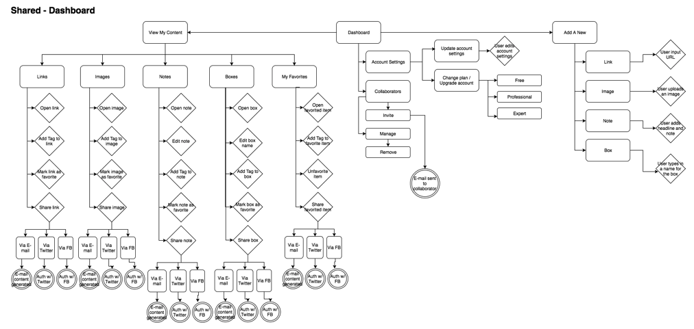

Case Study
Background
I worked on the design and development of Cubby, a web application that functions as a collaborative storage platform, allowing users to collect different types of information, share that content with others, and store and access it all in one place. This is a case study on the design process I followed throughout the project.
THE PROBLEM: FINDING COMPETITIVE ADVANTAGES
In the light of prominent established storage providers such as Google Drive, Dropbox, and Box, Cubby needed to be designed thoughtfully and with intent from the ground up, focusing on what sets it apart and what can give it that unique competitive advantage.
THE SOLUTION: RESPONSIVE & YOUTHFUL DESIGN
Cubby’s vibrant colors and responsive design make it an attractive, fun-to-use platform for audiences who are not only constantly on-the-go but also very “plugged in”—meaning they use their technological devices for everything and anything. Cubby’s ability to create text-based notes, store images, and bookmark links all in one place is the perfect solution for its target audience.
Click here to view the live homepage and dashboard that I developed for Cubby!
THE PROCESS: ITERATING “FROM THE GROUND UP”
Market and Competitive Analysis
One of the first steps I took in the design process for Cubby was to conduct an analysis of key competitors Google Drive, Dropbox, and Box. This was critical in understanding how to solve similar usability issues and identifying positioning strategies and areas of opportunity for Cubby to stand out from the competition.
I studied the strategic positioning of each of Cubby’s main competitors:
- Positioning: Box positions themselves as a primarily business solution, while Google Drive is positioned more for personal and general usage. Dropbox falls somewhere in between and can be used for both personal and business.
- Primary Audience: Box's primary audiences are enterprises and business users. Google Drive and Dropbox's primary audiences are students and individual users looking to store and share files.
- Differentiators: While all three offer file storage, file upload, and multiple user access, Google Drive offers tools (Docs, Sheets, Slides, etc.) that have similar functionality to the Microsoft Suite (i.e. Word, Excel, Powerpoint) but can be edited in real-time by multiple users, encouraging collaboration and resolving issues of versioning that can occur. Dropbox's recently released Paper tool is a workspace that multiple users can edit at one time, focusing on collaboration and real-time editing. Box and Dropbox also offer tools that are geared toward more advanced business users, like version history, security reporting, encryption, and API support. Dropbox's mobile photo upload feature is another a differentiator that sets it apart from other file sharing applications. Finally, Box and Dropbox's offline file access option and integration with the desktop (iOS and Windows) make usage very easy and integrated with typical workflows rather than having to log onto Google Drive using a browser every time.
I also conducted a SWOT analysis for the broader content storage market:
- Strengths: Players currently offer good cross-screen functionality (able to access account from both mobile and desktop); integration with desktop facilitates organic and automatic usage; intuitive navigation structure; offline file access anticipates needs of users
- Weaknesses: Sharing file documents only works with users within the same application; lack of functionality with Google Sheets / Slides compared to Microsoft Office suite
- Opportunities: Potential untapped markets—important to cater the design / application of Cubby to the segment of the market that has needs that are unmet by competitors (i.e. students, certain types of businesses, etc.)
- Threats: Hard to differentiate in a market that has well-established competitors like Google Drive, Dropbox, and Box; would be hard to gain market share in enterprise, as big businesses likely have long-standing contracts in place that would be difficult to switch or replace
User Research and Personas
In order to better understand Cubby users and how to best meet their needs, I conducted a survey of 11 potential users, asking questions to discover how users interact with their devices, what they look at online and what tools they currently use, how they collaborate and share resources, their usage of online social networks, as well as other basic demographic information.
- Devices and Browsing: All survey respondents own a smartphone and a laptop, while half own a tablet and approximately 1/3 own a smart TV. No respondents own a desktop computer. All respondents browse using their smartphone and most also use their laptop to look at social networks. A majority also look at news and watch videos. Based on this information, we have to make sure our app has cross-screen functionality across multiple devices and also supports video playing well.
- Saving Content: ~70% of respondents save content sometimes and typically bookmark it in their browsers or take screenshots. There are concerns on organization with browser bookmarking as quantity increases, so figuring out ways to manage and group bookmarks will be key.
- Writing Notes: All respondents write notes to remember things for later, and ~80% of respondents write notes often, both for business and personal usage. The most popular applications used are smartphone apps because they are easily accessible offline. Issues that come up are being able to access notes from other devices and notes not being formatted or organized automatically.
- Work Environment: Our respondents came from a variety of occupations, including software engineers, financial analysts, customer service representatives, project managers, and students. ~90% of respondents work in a collaborative environment. All share resources with their coworkers, ~70% of respondents indicating that this happens often. In Cubby, sharing will need to be simple and easy, especially among multiple groups of users.
- Social Networks: All respondents have a Facebook or Twitter account, and ~80% of respondents use their social media account to sign up for accounts on other websites due to faster sign-in ability and not needing to remember another password. Cubby needs to have social sign-in as an option.
- Demographics: Survey respondents are 18-34 years old and live all over the country, primarily in major metropolitan areas such as San Francisco, New York, Chicago, and Boston.
Based upon these survey results, I conducted follow-up interviews with three of the respondents and created user personas based on their responses.
User Flows and Site Map
The next step in the process was to map out how potential Cubby users would experience the site and flow through the application. I divided users into two types: new users and returning users. For each user type, I wrote down all the potential tasks they could accomplish in Cubby.

After creating this list, I mapped out user flows in Draw.io for each task and created a site map to ensure key features were easily and logically accessible by both first-time and returning users. This exercise also helped me to determine which feature sets to prioritize for a minimally viable product, and which features could be deprioritized as “nice-to-haves.”
Low-Fidelity Wireframes
Using myBalsamiq, I created some quick wireframes for the Cubby homepage and dashboard. This was a good way to iterate quickly and play around with different layouts before diving into more complex design elements.
Typeface and Color Palette Selection
I selected two typefaces for Cubby: Nunito and Lato.
Nunito has nice rounded edges, which makes it easy to read at varying sizes. The geometric shapes of the letters give it a balanced look that is appealing at first glance. The thickness of strokes give the typeface strength and weight—there's a feeling of security and solidity with the font face—which is a nice thing to convey as a file storage product.
Lato is similar to Nunito in shape, creating harmony. It has semi-rounded edges and a strong structure to provide our functional but friendly tone.
Cubby follows a variation of a split-complementary color scheme, using blue and yellow-green colors as the main logo, headline, and background colors and a reddish-pink hue as an accent for all calls-to-action.
Logo Design
Designing Cubby’s logo was an iterative process in itself. I first began with sketching out some ideas on paper for inspiration.
After curating several ideas, I mocked up a few of my favorites in Illustrator.
The final step was applying Cubby’s color scheme to the finished logo and creating an abbreviated version to be used in smaller allocated spaces:
High-Fidelity Wireframes
In Illustrator, I created some black and white high-fidelity wireframes of the homepage, onboarding process, dashboard, account settings, and adding content pages. More detailed and expansive than the lo-fi wireframes I created in myBalsamiq, this stage of the design process served the purpose of validating the viability of each user flow when taken from paper to application and setting up the assets needed for an important first round of usability testing, as detailed in the next section.
Testing and Prototyping: Round 1
For this round of testing, I created a prototype in InVision using the high-fidelity wireframes I mocked up in Illustrator. I used Peek to test my prototype, as well as conducting in-person usability tests on three potential users. This stage of the process was extremely important, as I was able to receive and implement crucial feedback for improving and altering the application design before delving further into development.
Click here to see some of the feedback that I received and implemented.
Application Design
Using Sketch, I created designs for Cubby’s homepage, onboarding flow, dashboard, content detail, and account settings pages, using a 12 column layout (68px wide) with 30px gutters.

Testing and Prototyping: Round 2
Using the design mockups I created in Sketch, I created a new prototype in InVision for another round of testing. I submitted the prototype to UserTesting for some in-depth usability tests.
I used Usability Hub to create a preference test for the placement of the Add button on the dashboard.
I also used Usability Hub to create a navigation flow test for adding an image to Cubby.
Development
After a second round of testing, I was ready to take Cubby to the development phase. I inputted the content and built the structure of the homepage and dashboard in HTML, and took to CSS to implement responsive styling (including a hamburger icon and sliding left navigation for mobile and tablet devices) through the use of media queries. For the interactive drop-downs that pop up when adding content or updating account settings, I used a jQuery plugin (Dropit).

Click here to view the live homepage and dashboard that I developed for Cubby!
Conclusion
Throughout this project, I really enjoyed learning and executing each step of the design process, from thinking about the competitive landscape, launching a survey and analyzing results, building user personas, sketching out lo-fi wireframes in myBalsamiq, selecting typefaces and color schemes, drawing logo designs, creating hi-fi wireframes in Illustrator, designing full mockups in Sketch, building prototypes in InVision, and finally developing and deploying the finished product. It's amazing how much work goes in from start to finish and how much iteration the product goes through throughout the process.
The biggest takeaway for me from this project was during the color scheme and typography selection process—learning to keep in mind that I am designing for a user base, not myself, and that it doesn’t always matter what my personal preferences are. The most rewarding process was the development stage. I really enjoyed troubleshooting elements of code and figuring out the puzzle of why certain things were working or not working. It's so satisfying when you hit refresh and that last bit of code you were struggling with finally works.